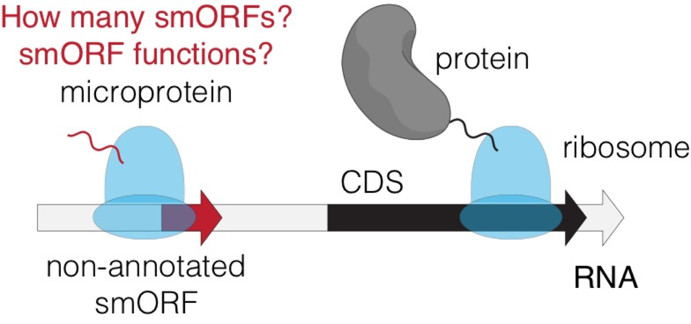
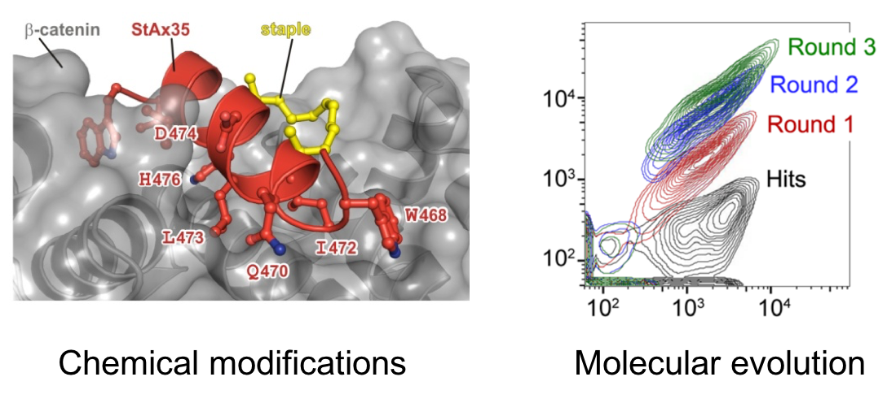

Discovery and functional characterization of smORF encoded microproteins
Microproteins are a class of polypeptides and small proteins encoded by small open reading frames (smORFs). Due to the small size and challenges in detection, microproteins have been largely unappreciated by conventional approaches. Recent advance in genomics and proteomics technologies have led to the discovery of hundreds to thousands of new microproteins. Emerging evidence demonstrates that these microproteins have essential roles in various biological processes including metabolism, apoptosis, and development, highlighting the value of characterizing these molecules. As a rapidly growing research interest, there are two fundamental questions in the field: 1) how many smORFs/microproteins are there in the genome; and 2) what are their functions? To address these questions, we are developing and employing novel approaches integrating chemistry and biology to obtain new insights into the protein-coding potential of genomes and to investigate the functional significance of microproteins in the context of human health and disease.
Development of innovative therapeutics with synthetic biologics
Small molecules and protein therapeutics are two major drug classes, with each being able to target approximately 10% of the proteome, indicating that at least 80% of potential protein targets remain resistant to current drug molecules. Therefore, a “holy grail” in drug discovery is to develop next-generation therapeutics for these undruggable targets. We will employ biotechnology, protein engineering and synthetic chemistry approaches to develop “synthetic biologics”, which can be evolved to possess exceptional binding potency and specificity, and can also be modified at will by synthetic means to improve drug-like properties. Our goal is to use these chemically modified macromolecules as unique tools to decipher the complexity of pathological signaling pathways, and ultimately as drug molecules for therapeutic intervention.
